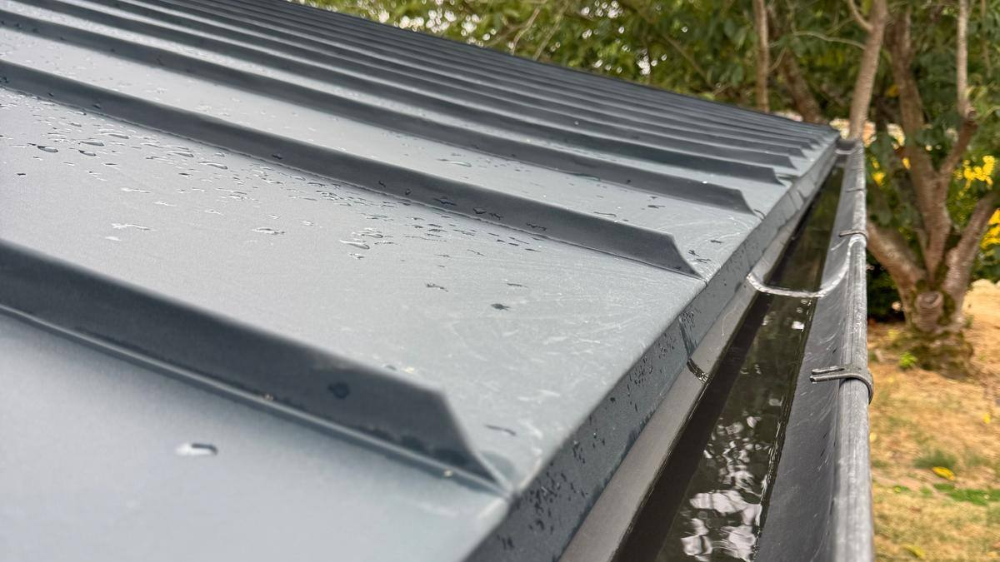
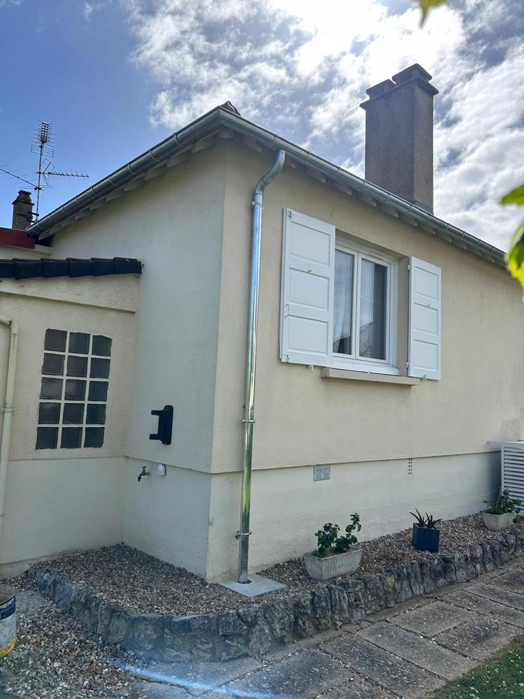
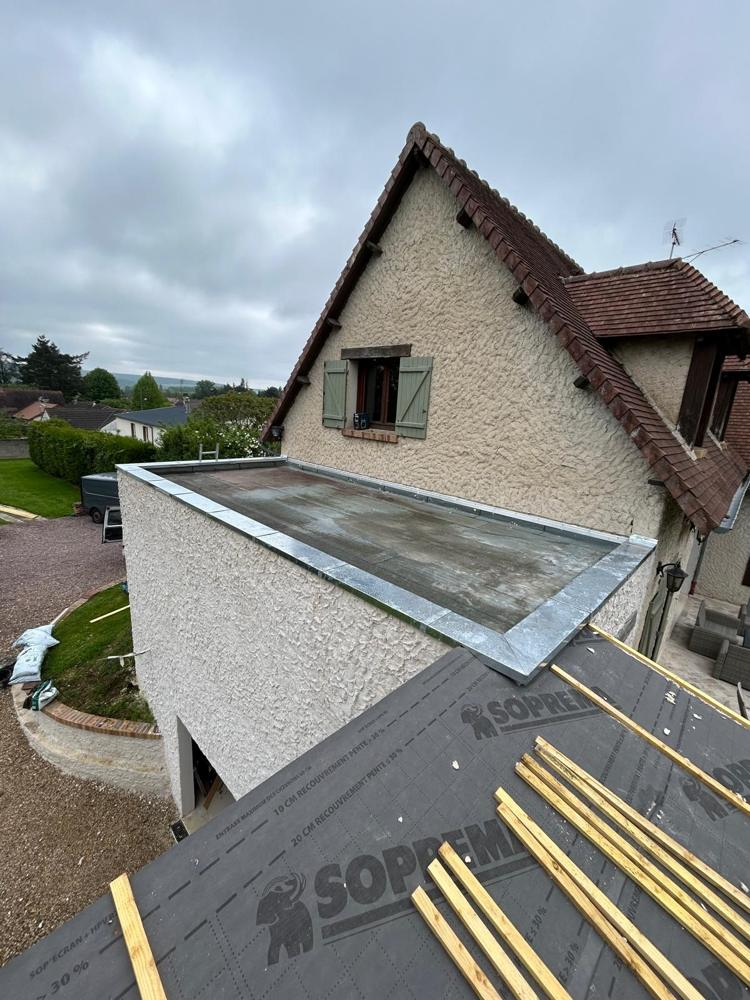
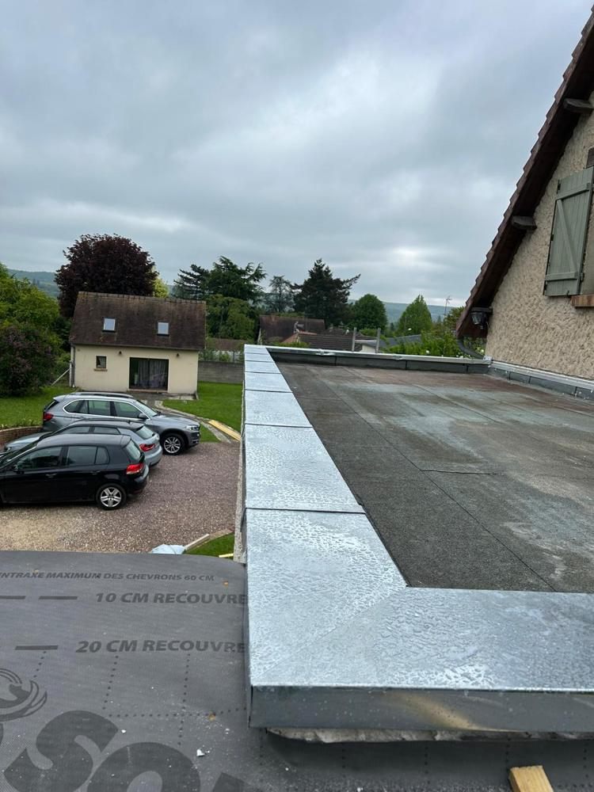
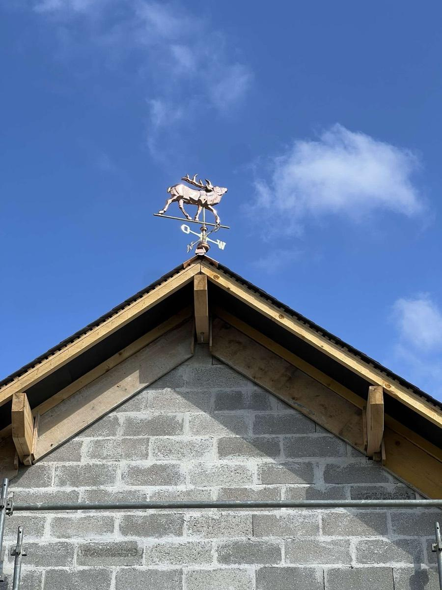

Gouttières et descentes
Remplacement ou pose neuve, avec la pente et les crochets refaits.
- Zinc, cuivre ou aluminium
- Gouttières pendantes et chéneaux
- Descentes et dauphins

Gouttières et zinguerie · Eure et départements voisinsEure (27)Calvados (14) et Orne (61)Eure-et-Loir (28) et Yvelines (78)Paris (75)
Gouttières, chéneaux, descentes et habillages façonnés par un ferblantier, dans l'Eure et les départements voisinspartout dans l'Euredans le Calvados et l'Orneen Eure-et-Loir et dans les Yvelinesà Paris.
Quand nous appeler
L'eau passe par-dessus et coule le long du mur.
Goutte à goutte aux raccords, aux angles ou aux talons.
Coulures, mousse ou enduit qui se décolle sous la gouttière.
Crochets tordus, pente perdue, eau qui stagne.
Ce que nous faisons
Remplacement ou pose neuve, avec la pente et les crochets refaits.
Les pièces façonnées qui protègent les rives, bandeaux et toits plats.
Les finitions en zinc ou en cuivre qui signent une toiture.

Sur nos chantiers



Comment ça se passe
Nous relevons les longueurs, les pentes et les descentes.
Métal, profil et finitions choisis avec vous.
Dépose de l'ancien, pose et contrôle de l'écoulement.
Zone d'intervention
Basés à Portes (27), nous intervenons dans six départements.
Évreux, Conches-en-Ouche, Bernay, Vernon
Voir la zone 14 · 61Lisieux, Caen, Deauville, L'Aigle, Alençon
Voir la zone 28 · 78Dreux, Chartres, Mantes-la-Jolie, Versailles
Voir la zone 75Les vingt arrondissements, copropriétés et maisons de ville
Voir la zoneZone d'intervention
Basés à Portes, entre Conches-en-Ouche et Évreux, nous intervenons dans ces communes et leurs environs.
Zone d'intervention
Depuis Portes (27), nous intervenons dans tout le Calvados et l'Orne, dans ces communes comme dans leurs environs.
Zone d'intervention
Depuis Portes (27), nous intervenons en Eure-et-Loir et dans les Yvelines, dans ces communes comme dans leurs environs.
Zone d'intervention
Depuis Portes (27), nous intervenons dans les vingt arrondissements, pour les copropriétés comme pour les maisons de ville.
Questions fréquentes
Le zinc est le plus courant sur les maisons de la région. Le cuivre se patine et dure très longtemps. L'aluminium laqué existe en plusieurs couleurs. Nous vous conseillons selon votre maison.
Pas toujours. Si le métal est sain, une jonction ou quelques crochets suffisent. Si elle est percée en plusieurs points, le remplacement revient moins cher à terme.
Oui. L'ornementation fait partie de notre métier de ferblantier : épis, girouettes, crêtes et habillages de lucarnes.
Le prix dépend de la surface, du matériau, de l'accès et de l'état de la toiture. Nous venons voir et vous remettons un devis gratuit, écrit et détaillé.
Oui. Nous intervenons pour les particuliers comme pour les entreprises, les syndics et les collectivités.
Autres prestations
Appelez-nous ou remplissez le formulaire : nous vous rappelons pour fixer une visite.